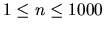
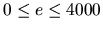

| Problem H: Fold-up Patterns |
More precisely, the pattern consists of a connected set of unit squares in the plane. For any edge between connected sides you are told whether to fold forward, back, or not at all along that edge, always at right angles. If an edge of two adjacent squares in the pattern is not mentioned in the input, you may assume that the squares are not connected and can be ripped apart when folding. However, connected edges must always be folded according to the description.
For our purposes a closed surface is one so that every square in the pattern separates the inside from the outside. When folded, the squares of the pattern lie on a rectangular, 3-dimensional grid, and each separates a cell (cubes of side length one unit) on the inside from one on the outside. For every cell it must be clear whether it is inside or outside. The following sketch illustrates this rule in two dimensions (the ``insides'' are shaded).

Note that according to our definition the second pattern in the sketch at the top of the page is a closed surface, although it rather looks like two separate cubes attached along an edge.
Two different squares must not occupy exactly the same position in space, though they may (and should for a closed surface) touch at edges and vertices. Make sure that the pattern does not interpenetrate itself through connected edges. Apart from that, do not worry about the process of folding, e.g. what edges are folded first or whether part of the structure is in the way for the rest.
The first line of the input specifies the number of scenarios.
For each scenario, the first line provides the number  of squares in the pattern and the number  of edges. Squares are labelled by the integers 0 to (n-1). The following e lines describe one edge each using the following four numbers:
Not a closed surface''
if the pattern does not form a closed surface or
``Closed surface, volume=''
and the volume as an integer if it does.
2 6 5 0 2 2 1 1 2 3 1 2 3 3 1 2 4 2 1 4 5 2 0 12 11 0 3 2 1 1 5 2 1 2 3 3 1 3 4 3 1 4 5 3 2 5 6 3 1 6 7 3 1 7 8 3 1 8 9 3 2 3 10 2 1 5 11 2 1
Not a closed surface Closed surface, volume=2